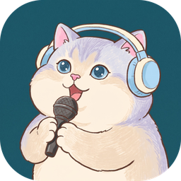

讓 GMScribe 使用麥克風
錄音時要把你自己說的話一起收進逐字稿。
瀏覽器跳出詢問視窗時,請選:
造訪這個網站時允許✓ 選這個
這次允許關掉分頁就失效
一律不允許無法錄到你的聲音
這裡的「網站」指的是 GMScribe 擴充功能本身,其他網站不會因此取得你的麥克風。

錄音時要把你自己說的話一起收進逐字稿。
瀏覽器跳出詢問視窗時,請選:
這裡的「網站」指的是 GMScribe 擴充功能本身,其他網站不會因此取得你的麥克風。